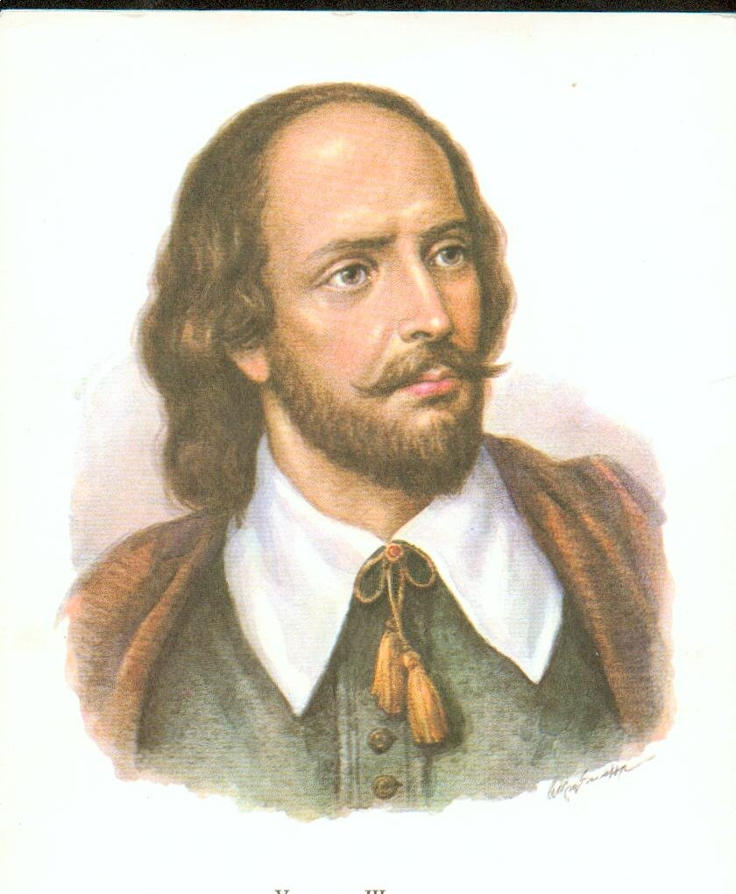
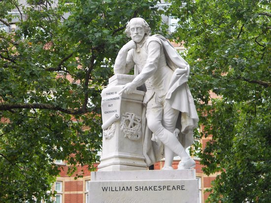

Biography of William Shakespeare
The life of the great playwright from birth to immortality

Who is William Shakespeare?
William Shakespeare (1564—1616) — English poet and playwright, often considered the greatest English-language writer and one of the world's finest playwrights. Often referred to as England's national poet.
His surviving works consist of 38 plays, 154 sonnets, 4 poems, and 3 epitaphs. Shakespeare's plays have been translated into all major languages and are performed more often than those of any other playwright.
Chronology of life
Born in Stratford
William Shakespeare was born in Stratford-upon-Avon. His exact date of birth is unknown, but his baptismal record dates back to April 26, 1564.
Parents: John Shakespeare (the glover) and Mary Arden (of noble birth)
Marriage to Anne Hathaway
At the age of 18, Shakespeare married 26-year-old Anne Hathaway. They had three children: Susanna (1583) and twins Hamnet and Judith (1585).
"The Lost Years"
A period about which almost nothing is known. Perhaps Shakespeare worked as a schoolteacher, joined a traveling theater troupe, or moved to London.
Moving to London and the first plays
Shakespeare moved to London and began his career as an actor and playwright. He wrote his first plays: "Henry VI," "The Taming of the Shrew," and "The Comedy of Errors."
The Lord Chamberlain's Men
Shakespeare became an actor and playwright with London's leading theatrical company. In 1599, the company built its own theatre, the Globe.
Opening of the Globe Theatre
The Globe Theatre opens on the south bank of the Thames, with Shakespeare becoming its co-owner. Many of his great plays were performed there.
Servants of the King
After James I's accession to the throne, the company received a royal patent and became the "King's Men." Shakespeare continued to write for the theater.
Return to Stratford
Shakespeare returns to his hometown and lives in New Place, the second largest house in Stratford, which he bought in 1597.
Death in Stratford
William Shakespeare dies at the age of 52. He is buried in Holy Trinity Church in Stratford-upon-Avon.
Inscription on the grave: "Friend, for God's sake, do not dig up the remains taken by this earth..."
Shakespeare's family
Anne Hathaway
Wife
She married Shakespeare in 1582. She was 8 years older than her husband.
Susanna Shakespeare
Daughter
Born in 1583. Married Dr. John Hall.
Hamlet Shakespeare
Son
Judith's twin. He died at age 11 in 1596..
Judith Shakespeare
Daughter
Twin of Hamnet. Married Thomas Quiney.
Heritage
Shakespeare left behind an incredible literary legacy. His work had a profound influence on the development of the English language and world theater.
- Created about 1700 new English words
- His plays have been translated into more than 100 languages.
- Shakespeare's works have been adapted for film more than 400 times.
- Thousands of productions of his plays are staged worldwide every year.
